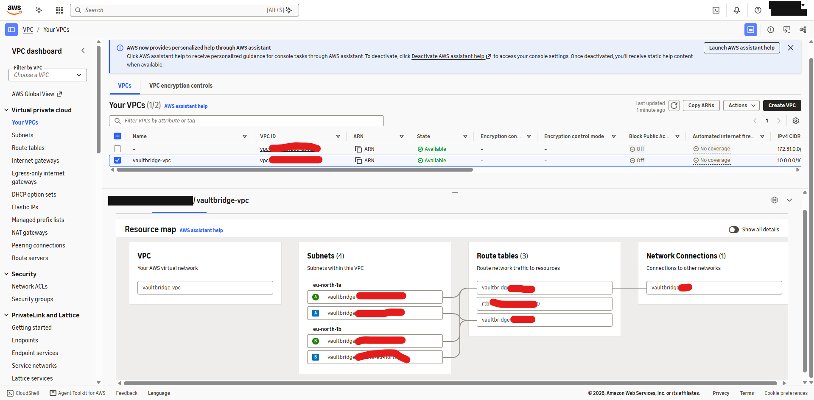
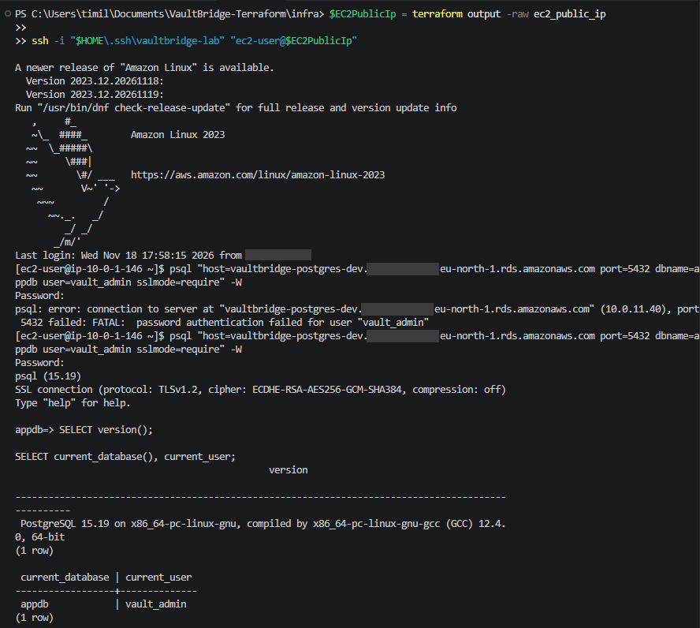
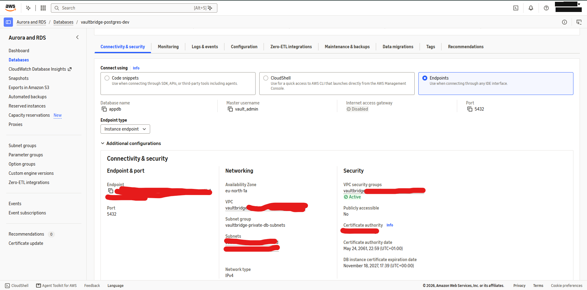

VaultBridge: Secure AWS Infrastructure as Code with Terraform
One manual firewall change. 4 hours 12 minutes of downtime. ~47,000 transactions affected. The fix wasn't a better rule. It was a better process.
SSituation
At VaultBridge Financial (a fictional fintech), application code was version-controlled but AWS infrastructure was changed by hand in the console. In the scenario, an engineer's manual security-group change exposed PostgreSQL port 5432 to the internet. The emergency response caused 4h 12m of downtime, affected ~47,000 transactions and cost an estimated US$214,000.
The root cause wasn't the single bad rule. Infrastructure changes had no review, no history and no repeatable baseline.
TTask
Define the environment as version-controlled Terraform with a secure-by-default network and database design, a protected remote state, and a fmt → validate → plan → review → apply workflow.
AAction
- Two-tier VPC across two AZs: public subnets for the app host, private subnets for the database with no IGW or NAT route
- Least-privilege DB access: 5432 is allowed only from the EC2 security group, never a CIDR. This directly prevents the incident
- SSH limited to one admin
/32, enforced by a Terraform variable validation - Encrypted EBS and RDS, IMDSv2 required, and DB connection logging
- DB credentials are
sensitiveand supplied via environment variables, never committed - Remote state in S3: versioned, AES-256, public access blocked, native S3 locking, plus a separate bootstrap workspace

RResult


- Connectivity, encryption and isolation verified; a test table written and read back
terraform validatepasses; the finalplanshows no changes in either workspace
ec2.tf produced a plan with no EC2 changes. I only caught it by reading the plan, not the summary. The plan is the review.